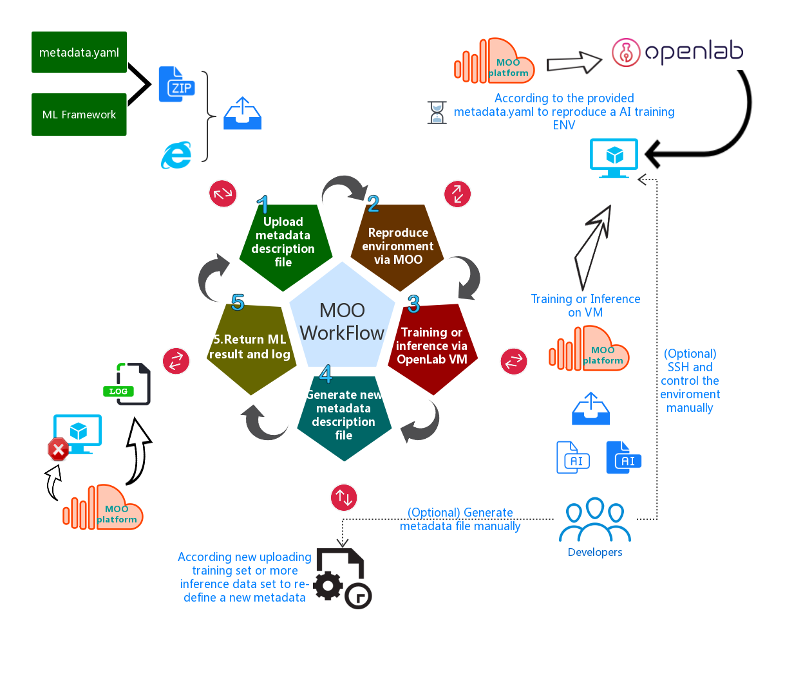

Machine Learning On Openlab(MOO) is a web service that can reproduce Machine Learning(ML) training or inferring environment for ML developers or operators.
Nowadays, developers can easily download some ML models from internet(e.g some ML model marketplaces). Those models are either trained or not. In order to use them, developers have to setup the specified ML environment. While there is a fact that even using the same model, if the enviroment is different, the ML result would be different as well. Developers need to adjust the environment again and again to make the result better. Once they want to use the model in another environment, they need to config it again. There is no way to describ the environment info.
We now provide you a way to describ ML environment following a metadata description standard. With this standard, developers can create a environment description file easily. Then MOO can reproduce the same ML environment for developers using the file quickly and esaily. Please follow the guide to learn more abort the ML metadata standard.
MOO which is based on OpenLab aims to reproduce ML environment following the metadata description standard mentioned above. The workflow is described by the picture below.
MOO is still under development. In the futrue, we'll provide a tool for generating the metadata file automaticlly as well.
Enjoy yourself!